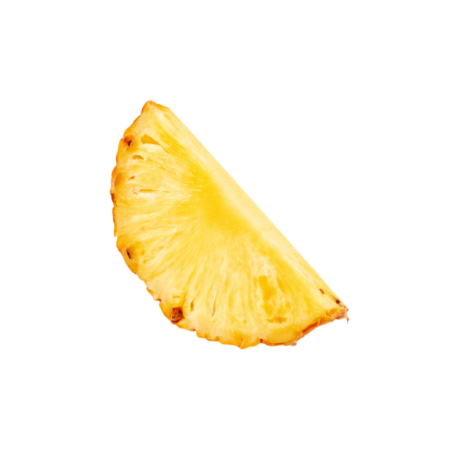
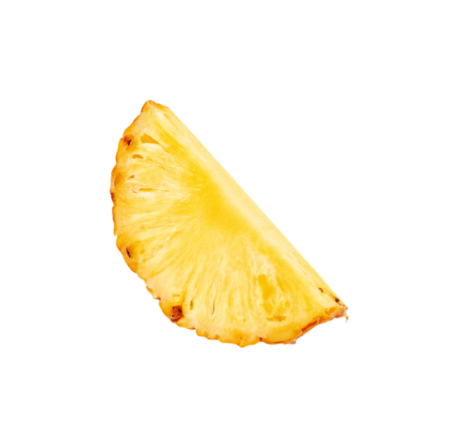

Introducing "Nanami's Pineapple Elegance" – a refined and sophisticated drink inspired by the distinguished character, Kento Nanami, from Jujutsu Kaisen. This exquisite beverage embodies the essence of Nanami's refined taste and gentlemanly demeanor.
With a tantalizing pineapple flavor, "Nanami's Pineapple Elegance" takes you on a journey of taste, blending the sweetness of ripe pineapples with a touch of subtlety. Every sip mirrors Nanami's composed and discerning nature, offering a refreshing and refined experience.
Crafted for the true connoisseurs, this drink pays homage to Nanami's impeccable style and discerning palate. Embrace the sophistication of "Nanami's Pineapple Elegance" – a drink tailored for gentlemen seeking a moment of refined indulgence in every sip. Cheers to the exquisite taste inspired by one of Jujutsu Kaisen's most distinguished characters!